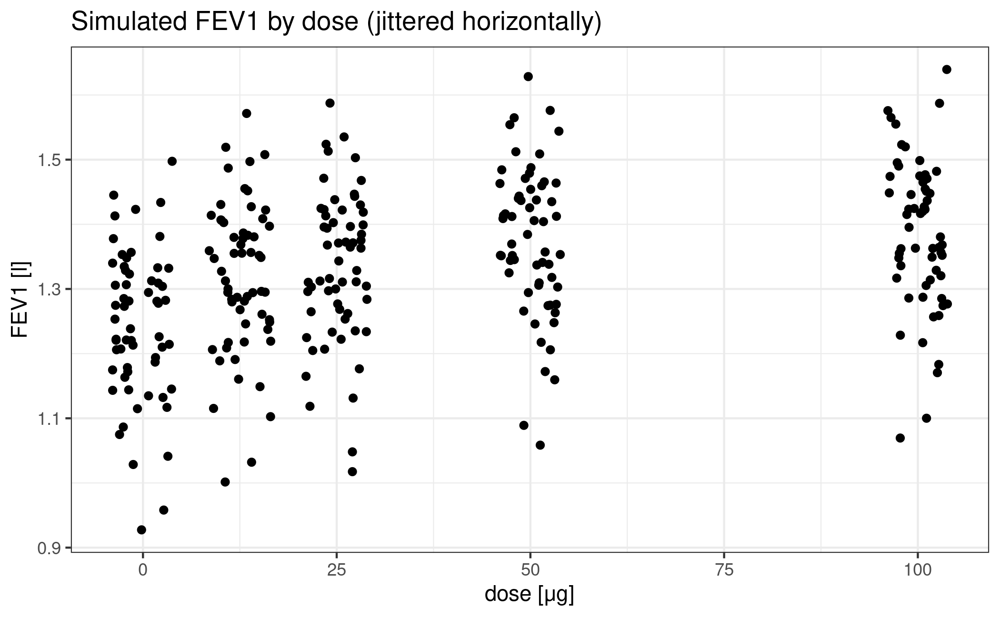
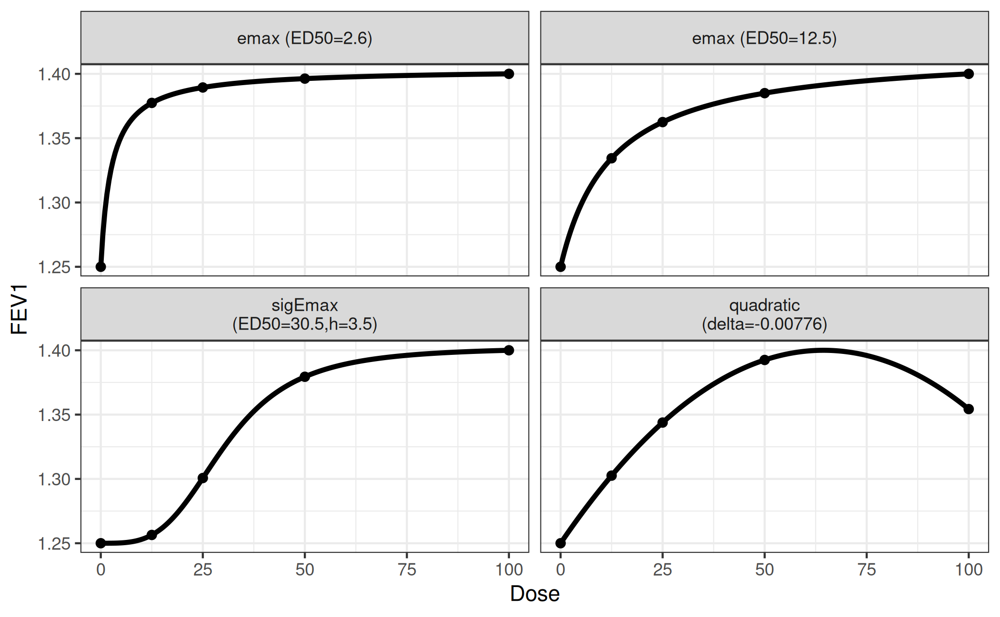
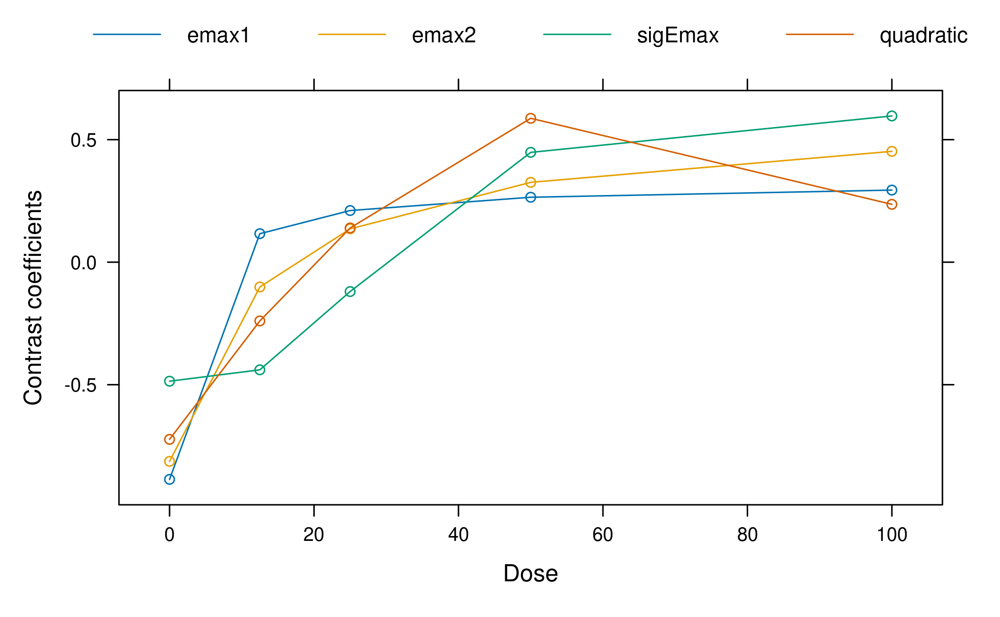
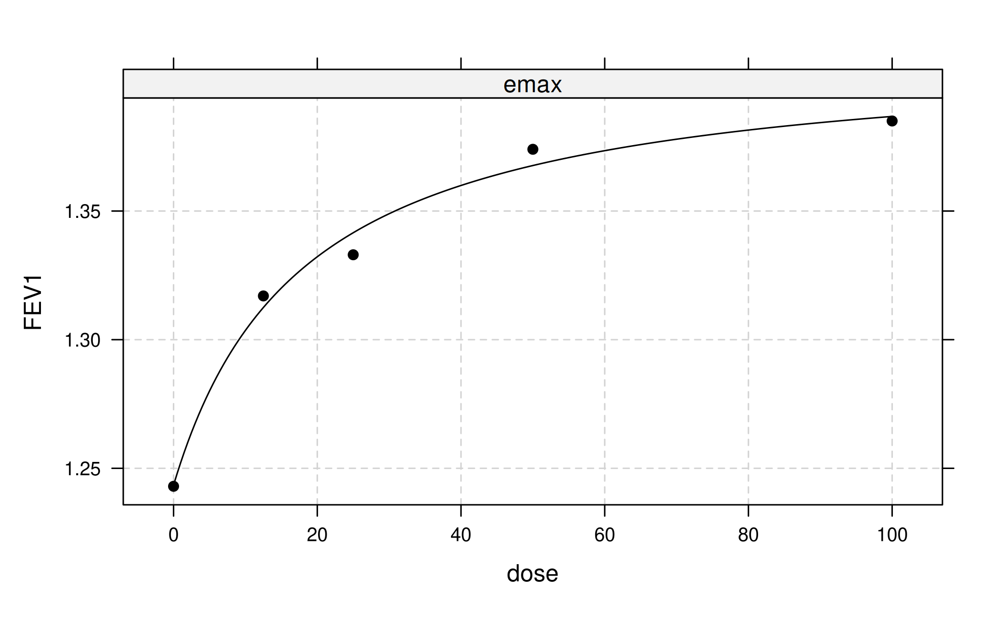
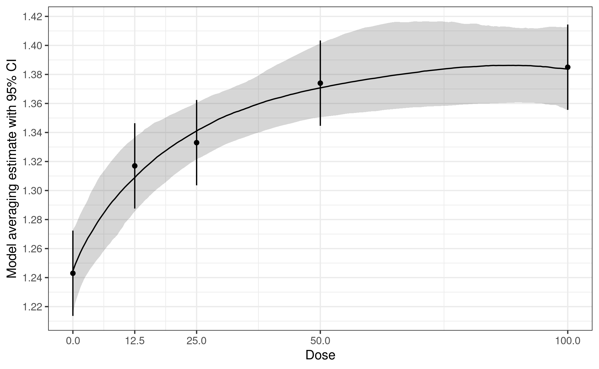

Background and Data
In this vignette we will illustrate the usage of the DoseFinding package for analyzing continuously distributed data. There is a separate vignette with details on sample size and power calculation.
We will use data from Verkindre et al. (2010), who actually use a
cross-over design and utilize MCP-Mod in a supportive analysis. More
information can be found at the corresponding clinicaltrials.gov
page and on the R help page ?glycobrom.
The main purpose Verkindre et al. (2010) was to provide safety and efficacy data on Glycopyrronium Bromide (NVA237) in patients with stable Chronic Obstructive Pulmonary Disease (COPD). The primary endpoint in this study was the mean of two measurements of forced expiratory volume in 1 second (FEV1) at 23h 15min and 23h 45min post dosing, following 7 days of treatment.
In order to keep this exposition simple, we will ignore the active control and focus on the placebo group and the four dose groups (12.5, 25, 50, and 100μg).
For the purpose here, we recreate a dataset that mimicks a parallel
group design, based on the published summary statistics. These can be
found in the glycobrom dataset coming with the
DoseFinding package. Here fev1 and
sdev contain the mean and standard deviation of the mean
(standard error) of the primary endpoint for each group, while
n denotes the number of participants.
library(DoseFinding)
data(glycobrom)
print(glycobrom) dose fev1 sdev n
1 0.0 1.243 0.0156 49
2 12.5 1.317 0.0145 55
3 25.0 1.333 0.0151 51
4 50.0 1.374 0.0148 53
5 100.0 1.385 0.0148 53We want to create a dataset with 60 participants in each of the five
groups. Noticing that the standard errors are essentially equal across
all groups, we draw five vectors of measurement errors centered at
0 with identical variances 60 * 0.015^2 which
we add to the observed means.
Note that here we use MASS::mvrnorm instead of
rnorm because it lets us generate random numbers with the
specified sample mean and sd.
set.seed(1, kind = "Mersenne-Twister", sample.kind = "Rejection", normal.kind = "Inversion")
rand <- rep(MASS::mvrnorm(60, 0, 60 * 0.015^2, empirical = TRUE), 5)
NVA <- data.frame(dose = rep(glycobrom$dose, each = 60),
FEV1 = rep(glycobrom$fev1, each = 60) + rand)
ggplot(NVA) + geom_jitter(aes(dose, FEV1), height = 0, width = 4) +
labs(title = "Simulated FEV1 by dose (jittered horizontally)") +
xlab("dose [μg]") + ylab("FEV1 [l]")
Design stage
Now let’s forget we already saw the data and imagine we had to design this trial with MCP-Mod.
First we decide that we want to include two Emax models, one sigmoid
Emax model and one quadratic model in the analysis (see
?drmodels for other choices). While the (sigmoid) Emax type
covers monotonic dose-response-relationships, the quadratic model is
there to accommodate a potentially decreasing effect at high doses.
Next we have to supply guesstimates for the nonlinear parameters:
- ED50 for an Emax model
- ED50 and the Hill parameter h for a sigmoid emax model
- coefficient ratio \(\delta = \beta_2/\lvert\beta_1\rvert\) in the quadratic model \(f(d, \theta) = E_0 + \beta_1 d + \beta_2 d^2\)
The following choices cover a range of plausible relationships:
- ED50 = 2.6 and ED25 = 12.5 for the Emax models (all doses have substantive effects)
- ED50 = 30.5 and h = 3.5 for the sigEmax model (first dose has a negligible effect)
- delta = -0.00776 for the quadratic model (downturn for the fourth dose)
We also fix the effect of placebo at an FEV1 of 1.25
liters and the maximum effect at 0.15 liters above placebo.
This implicitly sets the common linear parameters of all the models.
Note the syntax of the arguments to the Mods function:
emax = c(2.6, 12.5) specifies two Emax models, but
sigEmax = c(30.5, 3.5) only specifies one Sigmoid
Emax model.
doses <- c(0, 12.5, 25, 50, 100)
mods <- Mods(emax = c(2.6, 12.5), sigEmax = c(30.5, 3.5), quadratic = -0.00776,
placEff = 1.25, maxEff = 0.15, doses = doses)It’s always a good idea to perform a visual sanity check of the functional relationships implied by the guesstimates.
plotMods(mods, ylab = "FEV1")
This concludes the design phase.
We can also take a look at the calculated optimal contrasts. Each contrast has maximum power to detect a non-flat effect profile in the hypothetical world where the particular guesstimate is actually the true value.
Optimal contrasts
emax1 emax2 sigEmax quadratic
0 -0.886 -0.813 -0.486 -0.723
12.5 0.116 -0.101 -0.439 -0.240
25 0.211 0.136 -0.120 0.140
50 0.265 0.326 0.448 0.587
100 0.294 0.452 0.597 0.236
plot(optC)
It can be seen that in the balanced sample size case and equal variance assumed for each dose group, the optimal contrasts reflect the underlying assumed mean dose-response shape. This is no surprise, given that the optimal contrasts are given by \[ c^{\textrm{opt}} \propto S^{-1}\biggl(\mu^0_m - \frac{(\mu^0_m)^T S^{-1}1_K}{1_K^T S^{-1} 1_K}\biggr) \] where \(\mu^0_m\) is the standardized mean response, \(K\) is the number doses, and \(1_K\) is an all-ones vector of length \(K\) and \(S\) is the covariance matrix of the estimates at the doses (see Pinheiro et al. 2014 for a detailed account). As we have equal variance in all dose groups in our case and no correlation, the optimal contrasts are all proportional to the shapes of the candidate model mean vectors. As the standardized model is used in the formula, the values of the linear parameters of the models do not impact the optimal contrasts.
Analysis stage
Now fast-forward to the time when we have collected the data.
Multiple comparisons
We run the multiple contrast test with the pre-specified models. Note
that the type parameter defaults to
type="normal", which means that we assume a homoscedastic
ANOVA model for FEV1, i.e. critical values are taken from a
multivariate t distribution. Further note that when data is
supplied, the first two arguments dose and
FEV1 are not evaluated, but symbolically refer to
the columns in data=NVA.
Multiple Contrast Test
Contrasts:
emax1 emax2 sigEmax quadratic
0 -0.886 -0.813 -0.486 -0.723
12.5 0.116 -0.101 -0.439 -0.240
25 0.211 0.136 -0.120 0.140
50 0.265 0.326 0.448 0.587
100 0.294 0.452 0.597 0.236
Contrast Correlation:
emax1 emax2 sigEmax quadratic
emax1 1.000 0.957 0.648 0.867
emax2 0.957 1.000 0.839 0.929
sigEmax 0.648 0.839 1.000 0.844
quadratic 0.867 0.929 0.844 1.000
Multiple Contrast Test:
t-Stat adj-p
emax2 7.443 <0.001
quadratic 7.016 <0.001
emax1 6.937 <0.001
sigEmax 6.676 <0.001The test results suggest a clear dose-response trend.
Alternatively we can use generalized MCP-Mod (see the FAQ for the difference). We use R’s builtin lm()
function to manually fit the ANOVA model and extract estimates for the
model coefficients and their covariance matrix. We also need the model
degrees of freedom.
fitlm <- lm(FEV1 ~ factor(dose) - 1, data = NVA)
mu_hat <- coef(fitlm)
S_hat <- vcov(fitlm)
anova_df <- fitlm$df.residualNext we supply them to the MCTtest function together
with type="general". Note that in contrast to the
invocation above we here supply the doses and the estimates
mu_hat and S_hat directly and not within a
data.frame.
test_general <- MCTtest(dose = doses, resp = mu_hat, S = S_hat, df = anova_df,
models = mods, type = "general")
print(test_general)Multiple Contrast Test
Contrasts:
emax1 emax2 sigEmax quadratic
0 -0.886 -0.813 -0.486 -0.723
12.5 0.116 -0.101 -0.439 -0.240
25 0.211 0.136 -0.120 0.140
50 0.265 0.326 0.448 0.587
100 0.294 0.452 0.597 0.236
Contrast Correlation:
emax1 emax2 sigEmax quadratic
emax1 1.000 0.957 0.648 0.867
emax2 0.957 1.000 0.839 0.929
sigEmax 0.648 0.839 1.000 0.844
quadratic 0.867 0.929 0.844 1.000
Multiple Contrast Test:
t-Stat adj-p
emax2 7.443 <0.001
quadratic 7.016 <0.001
emax1 6.937 <0.001
sigEmax 6.676 <0.001For the simple ANOVA case at hand the results of the original and the generalized MCP-Mod approaches actually coincide. The p-values differ due to the numerical methods used for obtaining them.
cbind(normal = test_normal$tStat, generalized = test_general$tStat) normal generalized
emax1 6.937000 6.937000
emax2 7.442849 7.442849
sigEmax 6.675739 6.675739
quadratic 7.016303 7.016303 normal generalized
[1,] 1.221279e-11 1.224099e-11
[2,] 5.375700e-13 6.030731e-13
[3,] 5.924716e-11 6.039769e-11
[4,] 8.166245e-12 7.672307e-12Dose-response estimation
In the simplest case we would now proceed to fit only a single model type, for example the one with the largest t-statistic (or alternatively smallest AIC or BIC):

But actually we want to use a more robust approach that combines bootstrapping with model averaging in the generalized MCP-Mod framework.
First we draw bootstrap samples from the multivariate normal distribution of the estimates originating from the first-stage model. Next, for each bootstrapped data set we fit our candidate models, select the one with lowest AIC and save the corresponding estimated quantities of interest. This selection step implies that the bootstrap samples potentially come from different models. Finally we use these bootstrapped estimates for inference. For example, we can estimate a dose-response curve by using the median over the bootstrapped means at each dose. Similarly we can derive confidence intervals based on bootstrap quantiles. Inference for other quantities of interest can be performed in an analogous way.
As different models contribute to the bootstrap resamples, the approach can be considered more robust than simple model selection (see also Schorning et al. 2016 for simulations on this topic).
Now let’s apply this general idea to the case at hand. Our first-stage model is an ANOVA, and we’re interested in an estimate of the dose-response curve plus confidence intervals. Our set of candidate model types consists of Emax, sigEmax and quadratic.
We us R’s builtin lm() function to fit an ANOVA model
without intercept and extract estimates for the model coefficients and
their covariance matrix.
fitlm <- lm(FEV1 ~ factor(dose) - 1, data = NVA)
dose <- unique(NVA$dose)
mu_hat <- coef(fitlm)
S_hat <- vcov(fitlm)The bootstrap procedure described above is implemented in the
maFitMod function. Note that for technical reasons we have
to supply boundaries to the fitting algorithm via the bnds
argument to maFitMod (see ?fitMod and
?defBnds for details).
With the predict method we can obtain the predictions
from the fitted model on each boostrap sample. The plot
method allows to summarize the model fits (some limited customization is
possible see ?plot.maFit).
# point estimates (median) and bootstrap quantile intervals can be extracted via
ma_pred <- predict(fit_mod_av, doseSeq = c(0, 12.5, 25, 50, 100))
# individual bootstrap estimates via
indiv_pred <- predict(fit_mod_av, doseSeq = c(0, 12.5, 25, 50, 100),
summaryFct = NULL)
# plotting can be done via
plot(fit_mod_av, plotData = "meansCI",
ylab = "Model averaging estimate with 95% CI")
How to adjust for covariates?
In all practical situations covariates will be used to adjust for in
the analysis. The MCP step can then be performed for example by
including the covariates in the addCovars argument. Another
approach to perform the MCP step is based on the differences to placebo:
In a first stage lm(.) is fit with an intercept
included. Then the treatment differences and corresponding covariance
matrix would be extracted. This could then be fed into the
MCTtest function, with the placAdj = TRUE
argument, see ?MCTtest for an example. Both approaches will
give the same result.
A third alternative is to calculate the adjusted means (and
corresponding covariance matrix) and then perform generalized MCP-Mod
based on these estimates (following the same steps as in the unadjusted
analysis above, but adding the type = "general" argument as
well as the estimated covariance matrix via S). The
procedure is very similar to the situation explained in detail in the
vignette for the analysis of binary data,
so not repeated here.
For the case of normally distributed data adjusted means are calculated by predicting the outcome (using the covariate adjusted model) of each patient in the study under every dose, and then averaging over all patients per dose.